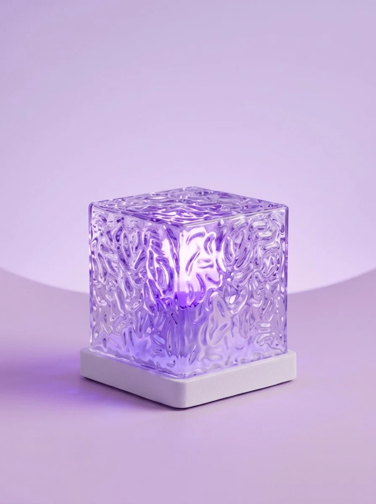
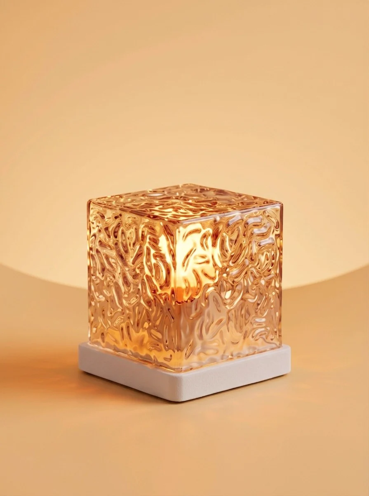

Le salon, après le film
Lavande sur les murs. On baisse la voix sans s’en rendre compte.
Un cube de verre martelé. Une lumière dedans. Et sur ton plafond, l’eau qui bouge lentement, comme au fond d’une piscine l’été.
La lumière tombe doucement.
Les couleurs de la pièce s’éteignent une à une.
Un geste.
Et le plafond
se met à onduler.
Chaque face du cube ressemble à une surface d’eau figée : des creux, des bosses, aucune régularité. Quand la lumière les traverse, elle se plie, se croise, et dessine au-dessus de toi des vagues qui ne se répètent jamais.
Touche une couleur. Ce que tu vois au-dessus, c’est ce que ta chambre verra ce soir.
Lagon
Glisse pour tourner le cube
Pas une lampe de chevet de plus. Un décor qui change avec ton humeur.
Lavande sur les murs. On baisse la voix sans s’en rendre compte.
Saphir profond au-dessus du lit. Le genre de bleu qu’on regarde jusqu’à fermer les yeux.
Ambre chaud. La pièce devient un endroit où rien ne presse.


07:12 · Bonjour. Elle t’attendra ce soir.
Lampe à ondulations d’eau en verre martelé. 16 couleurs, télécommande incluse, recharge USB.
Une seule lampe, 16 couleurs. L’aperçu ne change pas ta commande.
Ajouté.
Délais et tarifs à venir.
Recharge par USB. Autonomie précise à venir.
À venir.
Conditions de retour à venir.